School Events & Milestones
A look back at our recent activities and a preview of what's to come!
Nutrition Month Celebration
"FOOD at Nutrsyon Security, Maging Priority! Sapat na Pagkain, Karapatan Natin!"
Our Nutrition Month was a fun and educational campaign focused on **food security and the right to sufficient nourishment**. Students engaged in exciting activities, from cooking demonstrations and healthy lunch challenges to art contests promoting local and nutritious produce. It was a vibrant day dedicated to teaching children the importance of making healthy choices for a strong future.
Activities covered 8 different stations, including games and interactive learning.
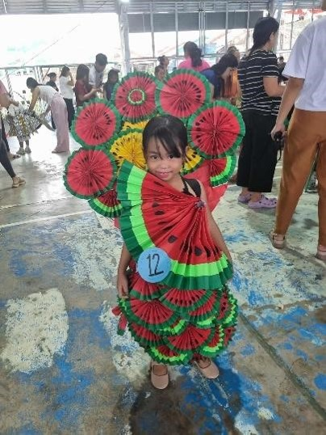
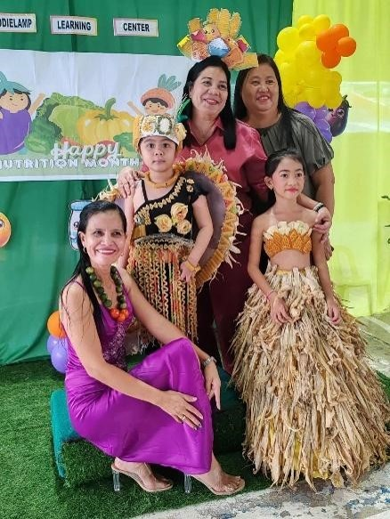
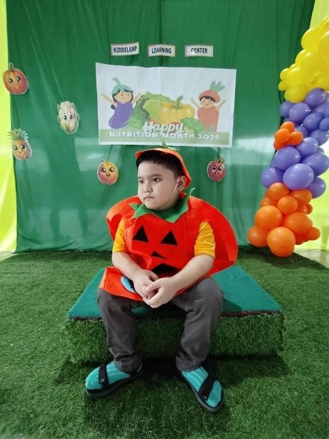
Summative Test & Buwan ng Wika
Academic Excellence: Summative Test
The Summative Test phase was a crucial time for students to **assess their learning and retention** from the past module. Our teachers ensured a calm and supportive testing environment, helping students approach the exams with confidence. The results guided our personalized learning plans for the upcoming weeks.
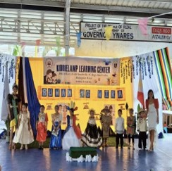
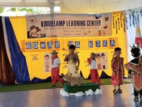
Cultural Pride: Buwan ng Wika
Simultaneously, we celebrated **Buwan ng Wika (National Language Month)** with immense pride. Students dressed in traditional Filipino attire, recited poetry, and performed folk dances. This event reinforced the appreciation for our rich heritage and the importance of the Filipino language in national identity.
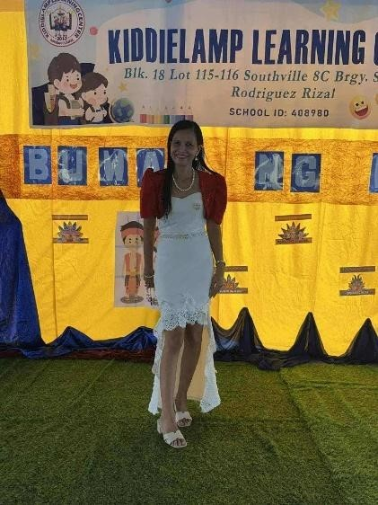
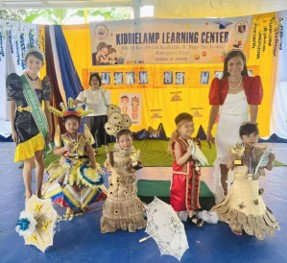
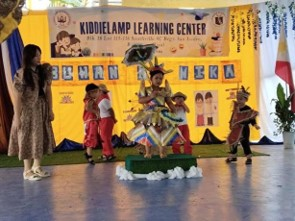
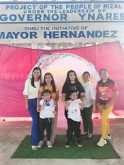
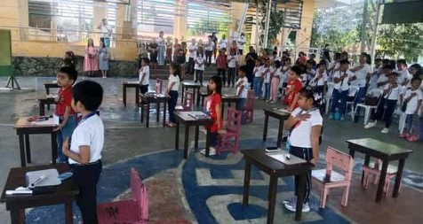
1st Periodical Test & Science Week
September was a blend of **academic assessment and scientific exploration**. Following the 1st Periodical Test, which reviewed the foundational concepts of the first quarter, we launched Science Week! This event featured interactive stations, engaging experiments, and guest speakers who sparked curiosity about the natural world and technology among our young learners.
- The test covered all core subjects for the period.
- Science Week promoted hands-on STEM skills.
- Students presented their self-made projects on environmental topics.
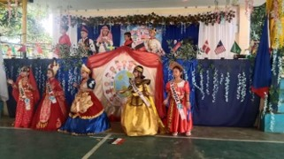
United Nations Day
Celebrating global diversity and promoting peace and understanding among nations.
Assessment and Awareness
October saw our students complete their Summative Test before diving into a celebration of **cultural diversity for United Nations Day**. Students researched and presented various countries, wearing national costumes, and learning about geography and global citizenship.
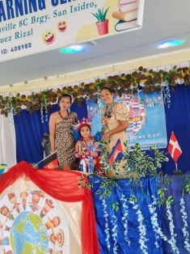
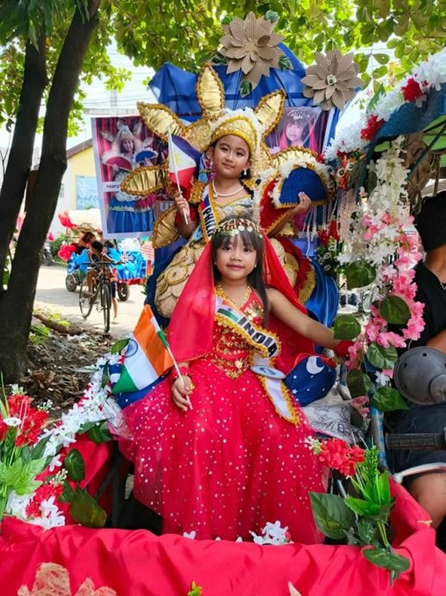
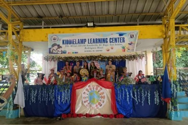
Upcoming Events Calendar
Mark your calendars! Here's a glimpse of the exciting activities and important dates ahead for our KiddleLamp community.
November
**2nd Periodical Test** (Academic focus) and **Halloween event / Scouting (BSP & GSP)** activities.
December
**Achievement Test**, **Field Trip**, and the grand **Christmas Party** celebration.
January
**3rd Periodical Test** to start the new year right.
February
**Valentine's Day** celebration, **Quiz Bee** academic challenge, and **Family Day**.
March
**Summative Test**, **Class Picture** day, and **Toga Picture** taking.
April
**4th Periodical Test**, **Graduation**, and **Recognition Day** ceremonies.